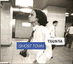

1995
アルバム 『GHOST TOWN』 (GST-0001)

1. GHOST TOWN
2. 影のない世界
3. INTERLUDE
4. Comedy Show
5. 鉛色の空の下で
アルバム 『やがて風は吹くだろう』 (GST-0002)
1. 子守唄が聴こえる
2. やがて風は吹くだろう
3. 神様
4. INTERLUDE〜青いテーブル
5. BLUE
1996
アルバム 『イカサマ天国』 (PCCA-1002)
1. 青いテーブル
2. たからさがし
3. やがて風は吹くだろう
4. ＺＯＮＯがいる！
5. イカサマ天国
6. 水族館へ行こう
7. でこぼこみち
8. あの日、黄昏の中で
9. やさしいうた
10. GHOST TOWN
シングル 『ＺＯＮOがいる！』 (PCDA-00878)
ｃ/ｗ 子守唄が聴こえる
1997
シングル 『やがて風は吹くだろう』 (PCDA-00945)
ｃ/ｗ 一緒に暮らしたい
1998
アルバム 『５＋１』 (PCCA-01178)

1. メリーゴーランド
2. Midnight Taxi Blues
3. あいてえな
4. 明るくなってきた
5. バイバイグッドバイサラバイ
6. 叫び続ける人
アルバム 『Pas de deux』 (PCCA-01231)
1. 裸足のプリマドンナ
2. ざまあみろって言ってやれ
3. Bad Luck Boy
4. 雨の土曜日
5. (It’s a) happy time
6. トリコロール
2001
カセットテープ 『The cheap tracks』 (TTOT-00001)
side a
1. カラス
2. 異常乾燥注意報
3. よくあるチープなラブソング
side b
4. レクイエム
5. Selfish man
6. underground
2002
アルバム 『GREAT CHEEP TRACKS』 (GVR-0001)

1. カラス
2. selfish man
3. LOVE ME
4. 風が強い日
5. 太陽に向かって走れ
6. ジプシーパイロット
7. ぺぺろんちーの
8. レクイエム
9. バオバブの木
10. よくあるチープなラブソング
11. Mr.holly
12. 明日が見える場所
13. underground *
（* ボーナストラック）
2003
公式海賊版 『TSUNTA3 live』
1. レクイエム
2. 白昼夢
3. 僕のbaby
4. bloody six
5. 片目のライオン
6. ギリギリ
2008
TSUNTA÷川上真樹 アルバム 『Listen』 (MYRC-001)

1. Speeding
2. Listen
3. ココロ
4. 天使のいない街
5. ジェットコースタースラローム
2009
アルバム『錯覚』(GVR-0002)
1. half moon
2. 片目のライオン
3. 記憶
4. 錯覚
5. 僕らがいた風景